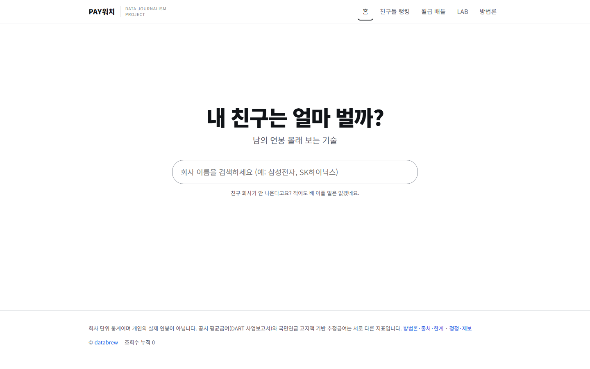
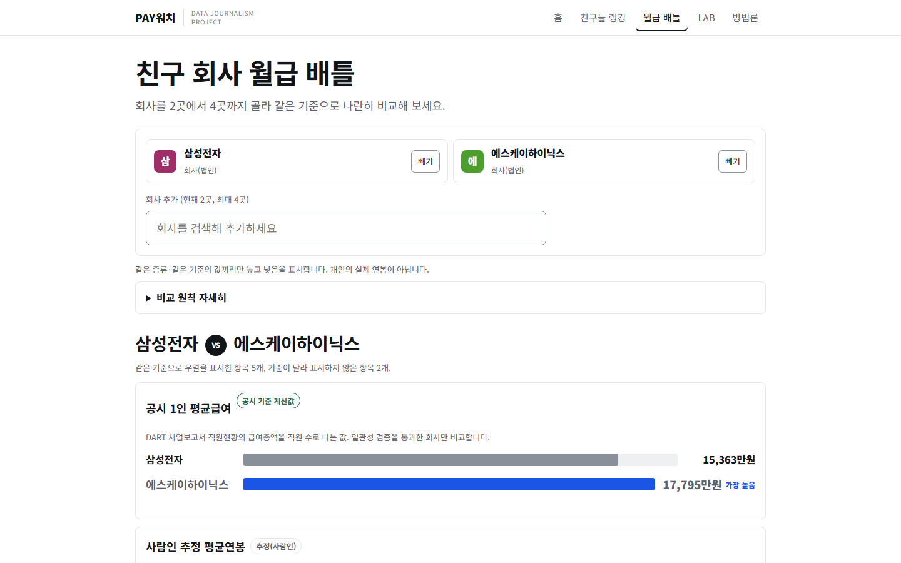
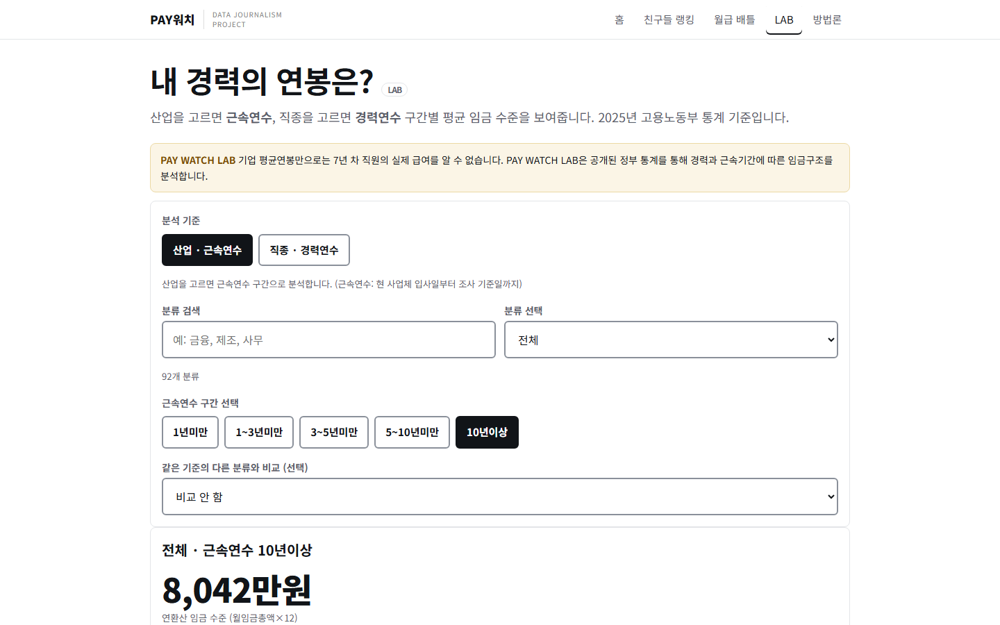

이런 서비스입니다
친구가 어느 회사에 다니는지는 알아도, 그 회사 사람들이 평균 얼마를 버는지는 잘 모릅니다. 상장사와 외부감사 대상 법인은 사업보고서에 직원 수와 급여총액을 공시하는데, 정작 읽기 쉽게 정리된 곳이 드뭅니다.
PAY워치는 회사 이름 하나로 그 숫자를 바로 보여 줍니다. 대표 평균연봉을 크게 보여 주고, 출처와 기준연도를 바로 밑에 적습니다. 그다음은 놀이입니다. 친구 회사를 모아 랭킹을 만들고, 삼성전자 대 SK하이닉스처럼 두세 곳을 맞붙이고, 업종 안에서 내 친구 회사가 어디쯤인지 봅니다.
이 서비스에서 가장 공을 들인 부분은 알 수 없는 것을 알 수 없다고 말하는 일입니다. 공시값, 추정값, 국민연금 역산값은 성격이 달라 섞어서 순위를 매기지 않습니다. 근거가 약한 값은 숫자를 만들지 않고 "자료 없음"이라고 씁니다.
화면의 평균연봉은 회사 전체 평균이며 개인의 실제 연봉이 아닙니다. 상여와 성과급이 포함된 값이고, 직종이나 직급별 급여는 알 수 없습니다.
무엇을 할 수 있는가
5,463개 기업을 하나의 검색창에서 찾습니다. 결과 화면에는 대표 평균연봉, 출처(DART 공시 또는 사람인 추정)와 기준연도, 평균근속과 직원 수, 소재지가 나옵니다.
1년 미만부터 10년 이상까지 다섯 구간을 눌러 가며 그 구간 집단의 평균 연봉 범위를 봅니다. 인력 구성만 반영한 기본 추정과 곡선 모양 변화까지 반영한 확대 추정을 함께 보여 주는, 연구용 실험 기능입니다.
친구들이 다니는 회사를 넣으면 우리 중 누가 제일 잘 버는 회사에 다니는지 순위가 나옵니다. 기업별 순위와 업종별 순위도 따로 볼 수 있습니다. 친구 개인이 아니라 재직 회사의 평균연봉 기준입니다.
회사를 2곳에서 4곳까지 골라 같은 기준으로 나란히 비교합니다. 삼성전자 vs SK하이닉스, 현대자동차 vs 기아, 네이버 vs 카카오, KB국민은행 vs 신한은행 같은 대결이 준비돼 있습니다. 같은 종류의 값끼리만 가장 높음을 표시하고 종합 승자는 만들지 않습니다.
산업을 고르면 근속연수 구간별, 직종을 고르면 경력연수 구간별 평균 임금 수준을 고용노동부 2025년 통계로 보여 줍니다. 산업 분류 92개를 고르고 다른 분류와 비교할 수 있습니다.
회사 화면 안쪽에서 국민연금 가입 사업장 자료로 역산한 추정 급여를 공시값과 나란히 봅니다. 평균연봉으로 쓰지는 않고 상한에 걸리는지 확인하는 참고 지표로만 씁니다.
화면 미리보기

홈 — 회사 이름만 검색한다
회사 — 공시 평균급여와 근속 구간 추정

월급 배틀 — 같은 기준끼리만 비교한다

LAB — 내 경력 구간의 임금 수준
데이터와 계산 방법
현재 평균연봉이 표시되는 기업은 4,000곳(DART 2,071곳, 사람인 1,929곳)입니다. 대표값은 DART 공시, 사람인 추정, 자료 없음의 순서로 한 가지 출처만 고르고, 출처별 원본값은 서로 덮어쓰지 않고 따로 보관합니다. 근속 구간 추정은 DART 기반 1,888곳, 사람인 평균연봉 기반 업종 참고 추정 794곳에만 제공합니다. 방법론 버전은 0.4.0-stage4입니다.
알 수 없는 것들
평균연봉은 회사 전체 평균입니다. 같은 회사 안에서도 직무와 직급에 따라 급여는 크게 다르고, 근속 구간별 숫자는 실험적 추정이라 정확도가 독립적으로 검증되지 않았습니다. 같은 산업 회사끼리는 추정 범위가 많이 겹치므로 기업 우열을 가리는 근거로 쓰지 마세요.
비상장 회사는 DART 값이 없을 수 있고, 지주회사처럼 이례적으로 높은 공시값은 정합성에 문제가 없으면 그대로 보여 주되 비교에 주의가 필요하다고 안내합니다. 개인의 연봉, 직종별 급여, 상여와 성과급을 포함한 총보수, 입사자·퇴사자 수와 퇴사율, 경영성과 대비 보상은 알 수 없습니다.
수치는 기업에 대한 평가나 단정이 아닙니다. 인용하기 전에 원자료를 확인해 주세요. 정정과 제보는 서비스 화면 하단의 링크로 받습니다.
기술 및 제작 방식
공시 원자료를 Python 파이프라인으로 수집·검증·매칭해 정적 파일로 빌드하고 배포합니다. 방문 통계는 쿠키 없는 GoatCounter로만 집계하며 개인 식별 정보는 수집하지 않습니다.
개발 현황
2026-11-07 공개. 통합 검색 5,463곳, 근속 구간 추정, 월급 배틀, LAB을 제공합니다. 새 자료가 확보되면 정제와 검증을 거쳐 반영하고 방법론 페이지의 이력에 기록합니다.